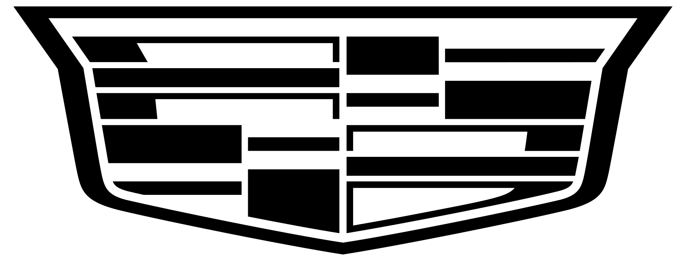

Icons
Material Symbols Outlined: inaktiv als Kontur, aktiv gefüllt. In Flutter direkt verfügbar über Icons.<name>_outlined bzw. Icons.<name>. Was Material nicht hat (F1-Wagen), ist im selben Raster ergänzt.
Größen und Zustände
24 · inaktiv
24 · aktiv
40 · aktiv

Formel 1 (inaktiv / aktiv)
- Fahrer (Helm)
sports_motorsports - Team
groups - Pokal / Meisterschaft
emoji_events - Wertung
leaderboard - Rennkalender
calendar_month - Strecke
route - Rundenzeit
timer - Geschwindigkeit
speed - Positionswechsel
swap_vert - Reifen / Boxenstopp
tire_repair - Technik / Setup
build - Regen / Wetter
water_drop - Live
sensors - F1-Wagen (Seitenansicht)
f1-car.svg
Teams
Echte Team-Logos (Wikimedia Commons) einheitlich in Weiß auf einer Kachel, Streifen in der Teamfarbe. Nur für den privaten Gebrauch – die Logos sind markenrechtlich geschützt. Für Racing Bulls gibt es dort kein Logo, daher vorerst der Schriftzug.
 McLaren
McLaren- Ferrari
- Mercedes
- Red Bull Racing
- Aston Martin
- Alpine
 Williams
Williams- Racing BullsRacing Bulls
- Haas
 Audi
Audi
Cadillac
Reifenmischungen
Ring in der Farbe der Mischung mit Kennbuchstabe, wie in den gängigen F1-Apps.
- Soft
- Medium
- Hard
- Intermediate
- Wet
Oberfläche (inaktiv / aktiv)
- Start
home - News
article - Profil
person - Einstellungen
settings - Anmelden
login - Abmelden
logout - Passwort anzeigen
visibility - Passwort verbergen
visibility_off - Suche
search - Benachrichtigungen
notifications - Hinzufügen
add - Schließen
close - Menü
menu - Ausgewählt
check - Zurück
arrow_back - Aufklappen
arrow_drop_down - Weiter
chevron_right - Bild-Platzhalter
image - Desktop
desktop_windows - Mobile
smartphone